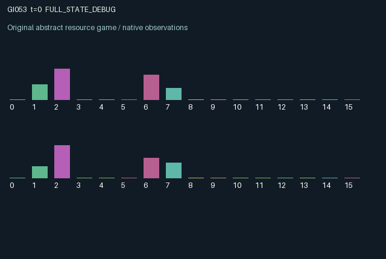

GI053 / LEGACY_ARRAY
astra-d2-00053: shared-capacity delayed liquid exchange
2 agents5 actions16 observation columns32 original horizonRuntime: PASS
Release verification episode
Untrained uniform legal actions. Actual JAX state sampled along the full original episode; full-state debug camera. No human performance or learning claim.

Run this game
crucibles play --game 53
Start Python locally, then open the address printed by the terminal. Installation, multiplayer, takeover and keyboard controls →
Objective, rewards & ending
Exact task contract
{
"termination": "Original kernel t >= 32; see mechanism and source"
}Declared per-step reward bounds: -1.0 to 1.0. Observability: source_defined.
Rules
Original mechanism document (historical status wording retained)
# astra-d2-00053: shared-capacity delayed liquid exchange This parentless source proposal draws on generic queueing networks, inventory control, maintenance, and common pollution externalities. It is not adapted from an inspected game or parent source. No experiment outcome or feedback capsule was supplied. No assertion of novelty, nonisomorphism, mechanism eligibility, compilation, or learning effectiveness is made. ## Actions and persistent transitions Each agent operates a receiving reservoir, a replenishable private cistern, local equipment wear, and a private desired sale size. A two-stage incoming pipe stores material addressed to that agent. Actions are 0 rest and replenish, 1 pump from one's cistern, 2 route reservoir liquid to the other agent, 3 sell liquid, and 4 service equipment while venting some stored liquid. All actions are legal; quantities are limited by current stocks. Routing requests depend on the sender's current reservoir and wear. A shared per-transition capacity scales both requests proportionally when they compete. Only the allocated amount leaves the sender; unallocated material stays in the reservoir. A routed amount enters the partner's far pipe stage in the next state, advances to the near stage on the following transition, and then arrives on the next transition. Operations use the old reservoir, so an arrival cannot be sold or sent onward before it has entered persistent storage. The reservoir has finite capacity. Arrivals and pumping can cause overflow, which penalizes both agents. Pumping, arrivals, and sales increase local wear; service reduces wear but consumes an action and vents liquid. Pumping and overflow increase a persistent shared silt level, while service by either agent lowers it. Wear limits future routing, and both wear and shared silt lower future sale quality. A sale draws that owner's next private desired quantity using the supplied key. Cisterns recharge slowly every tick and faster during rest. ## Information and observation columns The 16 columns are: time/32; own reservoir/2; own cistern/1.5; own incoming near pipe stage/0.6; own incoming far pipe stage/0.6; own wear; own desired sale size; other reservoir/2; other wear; own previous sale; other previous sale; own previous overflow; other previous overflow; shared silt; own previous action/4; other previous action/4. The other's private cistern and desired quantity are hidden. Each recipient observes its own committed incoming material, making advance overflow avoidance possible without exposing the partner's entire state. ## Incentives, delay, and reward bound Selling offers an immediate return based on sale quantity, match to the private desired size, and quality. Routing gives a small transfer reward, removes present stock, and creates a delayed inventory opportunity or overflow risk for the partner. A fraction of the partner's sale is also rewarded, while overflow imposes bilateral penalties. Servicing has an immediate cost and material loss but reduces both local wear and common silt. Shared transport capacity, delivery delay, and pollution allow one agent's timing to alter the other's future opportunities. Rewards are the clipped sum of sale value, a small partner-sale benefit and routing payment, minus pumping, servicing, and own/partner overflow costs. The explicitly bounded stocks and the final `jnp.clip(..., -1.0, 1.0)` determine the reward range. This stylized transfer system is not a physical fluid simulator and does not establish an advantage for any coordination strategy. ## Interface and evidence status The source uses two agents, 16 float32 observations per role, five all-legal actions, and fixed-shape array state including a scalar int32 clock. The clock advances once; both roles terminate when the new time reaches 32, with no reset inside `raw_step`. Info contains scalar `done_all` and the new-state legal mask. Only authoring and permitted syntax parsing belong to this handoff. Isolated compiler/runtime checks, duplicate review, mechanism qualification, and learning experiments are separate and remain unestablished.
Commands
0Action 0; see mechanism and source
1Action 1; see mechanism and source
2Action 2; see mechanism and source
3Action 3; see mechanism and source
4Action 4; see mechanism and source
Roles & abilities
agent_0 Original legacy agent; see mechanism and source
agent_1 Original legacy agent; see mechanism and source
Observation permissions
Training receives only the original observation rows. Role cameras use declared visibility; debug cameras are explicitly marked. Local benchmark records log debug exposure and role takeover history.
Exact observation layout
[]
Entity visibility & attributes
[]
Actual verification & provenance
Per-game execution receipt
{
"game": "gi053",
"status": "PASS",
"verification_revision": 2,
"source_sha256": "8c10e734cc5b8fbde122330984f316819314fd37e78b8357ddaa499e791d3069",
"seed": 20261101,
"runtime": {
"jax": "0.4.38",
"numpy": "1.26.4",
"devices": [
"TFRT_CPU_0"
]
},
"dimensions": {
"num_agents": 2,
"observation_size": 16,
"num_actions": 5,
"max_steps": 32
},
"checks": {
"eager_reset": {
"status": "PASS",
"seconds": 0.6370289325714111
},
"observation_spaces_legal_masks": {
"status": "PASS",
"seconds": 0.15188050270080566
},
"eager_step": {
"status": "PASS",
"seconds": 0.6598126888275146
},
"jit_reset": {
"status": "PASS",
"seconds": 0.6171460151672363
},
"jit_step": {
"status": "PASS",
"seconds": 0.45774149894714355
},
"eager_jit_integer_parity_float_measurement": {
"status": "PASS",
"seconds": 0.0
},
"jit_vmap_reset": {
"status": "PASS",
"seconds": 0.3690202236175537
},
"jit_vmap_step": {
"status": "PASS",
"seconds": 0.3976597785949707
},
"outer_autoreset_api": {
"status": "PASS",
"seconds": 1.0353991985321045
},
"full_original_horizon_episode_and_render": {
"status": "PASS",
"seconds": 1.9605903625488281
}
},
"human_scores": null,
"browser_controls": "PENDING",
"failures": [],
"elapsed_seconds": 6.763540983200073,
"float_parity_max_abs": 0.0,
"numerical_parity": "EXACT",
"raw_terminal_absorbing": "NOT_PART_OF_ORIGINAL_LEGACY_CONTRACT",
"terminal_outer_reset": "PASS",
"episode_steps": 32,
"scripted_random_returns": [
1.0383295022340846,
0.4642316746386861
],
"terminal": true,
"demo_information": "FULL_STATE_DEBUG",
"demo_frames": 33,
"render_roles_checked": 2
}Chromium control verification
{
"game": "gi053",
"status": "PASS",
"human_scores": null,
"engineering": true,
"checks": [
"catalog_selected_and_real_native_reset",
"dom_queue_and_native_step",
"second_participant_ownership_and_native_joint_step",
"all_roles_individually_controllable_no_role_cap",
"explicit_debug_camera",
"release_to_pure_ai_without_reset"
],
"seconds": 2.7516028881073
}Original identity and file hashes
{
"id": 53,
"key": "gi053",
"title": "astra-d2-00053: shared-capacity delayed liquid exchange",
"summary": "",
"tags": [],
"family": "legacy_array",
"dimensions": {
"num_agents": 2,
"observation_size": 16,
"num_actions": 5,
"max_steps": 32
},
"source_sha256": "8c10e734cc5b8fbde122330984f316819314fd37e78b8357ddaa499e791d3069",
"manifest_sha256": "dfc10f870bb23591b3cc8a65603f511a4634547e490fe33c4ed9ed23084258d2",
"files": [
{
"file": "candidate.py",
"sha256": "8c10e734cc5b8fbde122330984f316819314fd37e78b8357ddaa499e791d3069",
"bytes": 4512,
"origin": "work/exp_2/astra_generation/discovery_v2/initial/candidate_00053/attempt_00/candidate.py"
},
{
"file": "mechanism.md",
"sha256": "1b40997de73de1a2927e83219d67ccfca7261b5e6b63ea0daf941967b5c4538e",
"bytes": 4125,
"origin": "work/exp_2/astra_generation/discovery_v2/initial/candidate_00053/attempt_00/mechanism.md"
}
],
"original_status": "LEGACY_SOURCE",
"original_saved_replay": false,
"release_validation": "PASS",
"human_scores": null,
"browser_validation": "PASS"
}